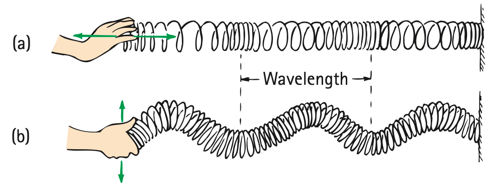

Vibrations and Wave Properties
Mathematical idea: Wave diagrams connect measurable spacing and timing to the speed of a traveling disturbance.
You will read wave pictures as evidence: first noticing what moves, then measuring amplitude, wavelength, frequency, period, and finally connecting those quantities to wave speed.
Learning Target
Students will describe vibrations and waves using amplitude, wavelength, frequency, period, and wave speed.
I can statements
- I can explain that a vibration is a repeated back-and-forth motion.
- I can describe a wave as a disturbance that transfers energy.
- I can identify amplitude, wavelength, frequency, period, crest, trough, compression, and rarefaction.
- I can distinguish transverse waves from longitudinal waves.
- I can use wave speed relationships to connect frequency, wavelength, and speed.
Vocabulary
These are words you will see in this section. Do not define them yet.
- vibration
- wave
- medium
- amplitude
- wavelength
- frequency
- period
- crest
- trough
- transverse wave
- longitudinal wave
- compression
- rarefaction
- wave speed
Use the preview activity to decide which words you already know, recognize, or do not know yet. Watch for these words in bold when they are first introduced or defined in the reading.
Preview: Skim Before You Read
Directions
Before reading closely, skim the vocabulary list and the section. Look at titles, headings, bold words, pictures, captions, diagrams, tables, and formulas. Do not try to understand everything yet. Your job is to notice what already looks familiar and make predictions about what this section may explain.
Step 1 — Sort the vocabulary. Write each vocabulary word in the column that best matches what you know right now. You may move a word later.
| Know for sure | Recognize | Don’t know yet |
|---|---|---|
Step 2 — Skim the section. Record what catches your attention before you read closely.
| What I noticed | |
|---|---|
| What I predict | |
| What I wonder |
Content: Read, Look, Annotate, Apply
Directions
Read in short chunks. Annotate the prose and the figures together: underline evidence, circle or highlight bold vocabulary, label arrows or measured features, connect a sentence to an image, and write short questions or connections in the margins.
Reading 1: From Repeating Motion to a Traveling Disturbance
A vibration is repeated back-and-forth motion. A pendulum swings from one side to the other and back again; a tuning fork prong moves to and fro; a spring bob can move up and down. The important feature is repetition around an equilibrium position rather than motion that simply continues in one direction.
A wave is a disturbance that spreads through space and transfers energy. In a mechanical wave, the substance that carries the disturbance is the medium. The medium does not have to travel with the wave. Its parts can move locally while the disturbance moves much farther.

Image read: Follow the two colored masses in the pendulum part of the figure. Mark what repeats and identify the midpoint around which the motion occurs.
The pendulum image emphasizes that the repeating motion is not a one-way trip. A pendulum returns through the same positions again and again. That repeated motion can become the source of a wave when it causes a disturbance in a surrounding material or field.

Image read: Trace the path from the vibrating spring bob into the drawn curve. Circle one complete repeated pattern on the curve.
The textbook uses this tracing to connect motion in time with a pattern in space. The curve is not a picture of the bob flying along the page; it records how the bob’s repeated motion can be represented as a wave pattern.
Stop and Discuss
- In the pendulum and spring images, what evidence shows that the source is vibrating rather than moving continuously in one direction?
- Explain how a wave can transfer energy even though the medium itself does not travel from the source to the receiver.
Example 1: Stadium Wave
Fans in a row stand up and sit down one after another while the pattern moves across the stadium.
- What is vibrating or repeating locally?
- What is traveling across the stadium: the people themselves or the disturbance pattern? Explain.
You Try It 1: Rope Pulse
A student gives one end of a long rope a quick upward-and-downward motion. A pulse travels down the rope.
- Identify the vibrating source and the medium.
- Describe what travels far and what only moves locally.
Reading 2: Reading the Shape and Timing of a Wave
On a transverse wave drawing, a high point is a crest and a low point is a trough. These features repeat around the equilibrium line, which represents the midpoint of the vibration.
The amplitude is the maximum displacement from equilibrium to a crest or to a trough. It tells how far the medium is displaced from its middle position. The wavelength is a distance measured between matching points on neighboring cycles, such as crest to crest or trough to trough.

Image read: Draw one vertical measurement for amplitude and one horizontal measurement for wavelength. Make sure each starts and ends at the correct reference points.
The frequency tells how many complete cycles occur each second and is measured in hertz. The period tells how much time one complete cycle takes. A high frequency means many cycles happen in a short time, so the period is short. A low frequency means fewer cycles each second, so the period is longer.
The wave picture gives spatial information such as amplitude and wavelength. Watching one point over time gives timing information such as frequency and period. Together, these descriptions let us connect a diagram to a real vibrating system.
Stop and Discuss
- Using the practice wave image, explain why amplitude and wavelength are different kinds of measurements.
- If a source completes more cycles each second, what happens to the time for one cycle? Explain without using a formula first.
Frequency counts cycles each second, while period measures seconds per cycle.
$$f=\frac{1}{T}$$ $$T=\frac{1}{f}$$$f$ is frequency in hertz (Hz), and $T$ is period in seconds (s). Because they are reciprocals, increasing one decreases the other.
Example 2: Electric Toothbrush Timing
An electric toothbrush vibrates 50 times each second.
- State its frequency.
- Use the period relationship to find the time for one vibration.
- Explain what the period means physically.
You Try It 2: Slow Sway
A tall structure completes one full sway every 8 seconds.
- State its period.
- Find its frequency.
- Explain why this is a low-frequency vibration.
Reading 3: Transverse and Longitudinal Waves
In a transverse wave, the medium moves perpendicular to the direction the wave travels. A pulse moving right along a rope can make each small piece of rope move up and down. The rope pieces do not travel right with the pulse.

Image read: Use two arrows: one for the direction of the wave and one for the motion of a marked piece of rope. Check that the arrows are perpendicular.
In a longitudinal wave, the medium moves parallel to the direction the wave travels. Pushing and pulling a Slinky along its own length crowds some coils together into a compression. Between crowded regions is a spread-out rarefaction.

Image read: Compare the two Slinky panels. Mark the direction of energy transfer in both, then mark the direction the coils move in each panel.
Both wave types transfer energy. The difference is the direction in which the medium vibrates compared with the direction the disturbance travels. Sound in air is a common longitudinal wave; waves on a stretched string are transverse.
Stop and Discuss
- Use the rope and Slinky images to state the rule that separates transverse from longitudinal waves.
- In a longitudinal wave, why do compressions and rarefactions travel even though individual coils or particles only move back and forth?
Example 3: Classify the Motion
A pulse travels east along a rope while a marked point on the rope moves north and south.
- Classify the wave as transverse or longitudinal.
- Use the two directions as evidence.
You Try It 3: Slinky Push-Pull
A student repeatedly pushes and pulls the end of a Slinky toward and away from a wall. Crowded coil regions move toward the wall.
- Classify the wave.
- Identify a compression and a rarefaction in words.
Reading 4: How Frequency and Wavelength Set Wave Speed
The wave speed tells how quickly the disturbance moves from one location to another. The ordinary idea of speed still applies: a wave covers a distance during a time interval.

Image read: Pick one direction outward from the center. Mark the distance from one crest to the next as one wavelength.
At a fixed point, frequency tells how many wavelengths pass each second. If each wavelength is longer, each passing cycle carries the disturbance farther. That gives the wave-speed relationship: frequency times wavelength.

Image read: The picture shows a 1 m wavelength and one wavelength passing each second. Use those two facts to justify the labeled speed.
For a given medium and conditions, changing the source frequency does not automatically make the wave travel faster. Instead, wavelength can adjust. This distinction between how often the source vibrates and how fast the disturbance travels will matter again when we study sound and the Doppler effect.
Stop and Discuss
- Use Figure 19.9 to explain wave speed in words before writing an equation.
- If wave speed stays constant and frequency increases, what must happen to wavelength? Use the relationship among the three quantities.
General speed is distance divided by time:
$$v=\frac{d}{t}$$For periodic waves, one cycle carries the pattern one wavelength, so:
$$v=f\lambda$$Solving the same relationship for wavelength gives:
$$\lambda=\frac{v}{f}$$$v$ is wave speed, $f$ is frequency, and $\lambda$ (lambda) is wavelength.
Example 4: Water-Wave Speed
Water crests are 2 m apart and 3 crests pass a point each second.
- Identify the frequency and wavelength.
- Calculate the wave speed with $v=f\lambda$.
- Interpret the result in a sentence.
You Try It 4: Rope Wavelength
A wave travels along a rope at 12 m/s while the source vibrates at 4 Hz.
- Use $\lambda=v/f$ to find the wavelength.
- Explain what that wavelength represents on the rope.
Vocabulary: Define the Terms
You have now seen these words in the reading, images, and practice. Use this table to consolidate the physics meaning of each term.
| Vocabulary term | Definition |
|---|---|
| vibration | A repeated back-and-forth motion or periodic wiggle in time. |
| wave | A disturbance that extends through space and transfers energy from a source to another location. |
| medium | The material whose particles or parts vibrate as a mechanical wave passes. |
| amplitude | The maximum displacement from the equilibrium position to a crest or trough. |
| wavelength | The distance between successive identical points on a wave, such as crest to crest or compression to compression. |
| frequency | The number of complete vibrations or cycles each second; measured in hertz (Hz). |
| period | The time required for one complete vibration or cycle. |
| crest | A high point of a transverse wave. |
| trough | A low point of a transverse wave. |
| transverse wave | A wave in which the medium moves perpendicular to the direction the wave travels. |
| longitudinal wave | A wave in which the medium moves parallel to the direction the wave travels. |
| compression | A crowded region of a longitudinal wave where the medium is pushed closer together. |
| rarefaction | A spread-out region of a longitudinal wave between compressions. |
| wave speed | The rate at which the wave disturbance travels through space. |
Summary
- A vibration repeats around an equilibrium position; a wave transfers a disturbance and energy from place to place.
- Amplitude measures maximum displacement; wavelength measures spacing between repeated points; frequency counts cycles per second; period is time per cycle.
- Transverse waves have medium motion perpendicular to wave travel; longitudinal waves have parallel medium motion with compressions and rarefactions.
- $f=1/T$ and $T=1/f$ connect frequency and period.
- $v=d/t$, $v=f\lambda$, and $\lambda=v/f$ connect wave speed, frequency, and wavelength.
Common Mistakes
| Mistake | Why it is tempting | Check instead |
|---|---|---|
| The medium travels with the wave. | The disturbance visibly moves across the diagram. | Track one particle or coil: it oscillates locally while energy moves through the medium. |
| Amplitude and wavelength are the same measurement. | Both are shown as distances on a wave diagram. | Amplitude is displacement from equilibrium; wavelength is spacing between repeating points. |
| Higher frequency always means faster wave speed. | Frequency sounds like “how fast.” | Separate vibration rate from travel speed; in one medium, wavelength may change instead. |
| Compression means the particles stay crowded together. | The crowded region moves across the diagram. | The particles oscillate; the compression pattern travels. |
Define wavelength in your own words and name one pair of matching points that can be used to measure it.
A wave has frequency 6 Hz and wavelength 1.5 m. Determine its wave speed and explain what the value means.
What is one thing you learned in this section? Explain it in at least one complete sentence.
What is one thing from this section you still need to understand or practice more? Be specific.